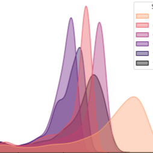
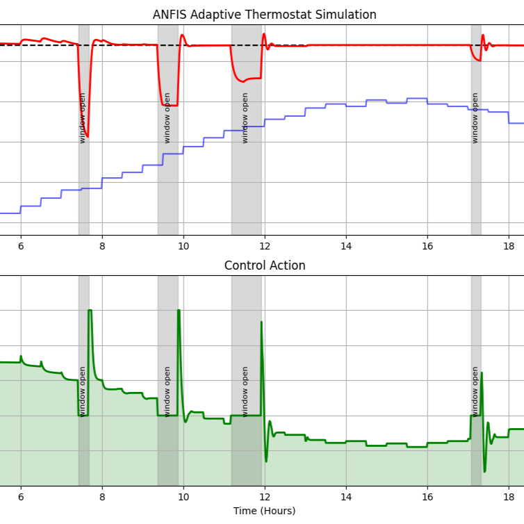

Built machine learning models that predict the speed, power use, and accuracy of approximate hardware circuits directly from their structure, replacing slow simulation tools with fast estimators. Developed on Cartesian Genetic Programming and evolutionary circuit design at FIT VUT Brno.

Built an adaptive room-temperature controller using ANFIS (Adaptive Neuro-Fuzzy Inference System), combining fuzzy logic with a trainable neural network layer so the controller adjusts to changing conditions rather than relying on one fixed rule.
Built a conversational assistant with IBM Watson Assistant for the "Business Informatics" study program at FEI TUKE, helping students adapt to university life through predefined answers and resource links. A working prototype, live below.